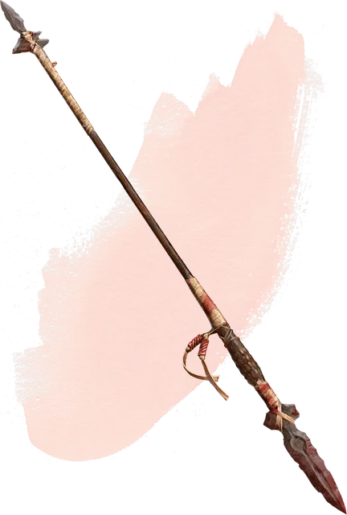

Кровавое копьё
Blood Spear
Оружие (копьё), необычное (требуется настройка)

Рекомендованная стоимость 101-500 зм
Каван был беспощадным вождём, чьё племя веками жило в Горах Балинок, задолго до прибытия Страда фон Заровича. Хотя он был весьма жив, Кавану были присущи некоторые черты, присущие вампирам: он спал днём и охотился ночью, он пил кровь своих жертв, и он жил под землёй. В бою он использовал копьё измазанное кровью. Это было первое кровавое копьё – оружие, что пило кровь тех, кого оно убивало, и передавало жизнь его носителю, наделяя его силами, чтобы сражаться дальше.
Когда вы попадаете рукопашной атакой этим магическим копьём и понижаете хиты цели до 0, вы получаете 2к6 временных хитов.
Любое существо может использовать это копьё, но лишь персонаж, избранный Каваном для этого, получает бонус +2 к броскам атаки и урону этим волшебным оружием.